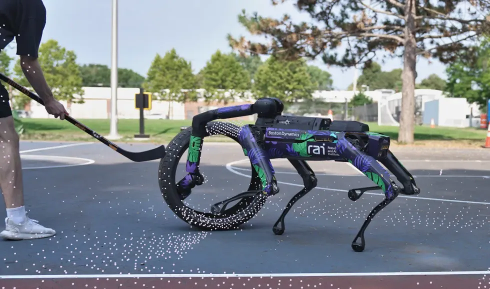
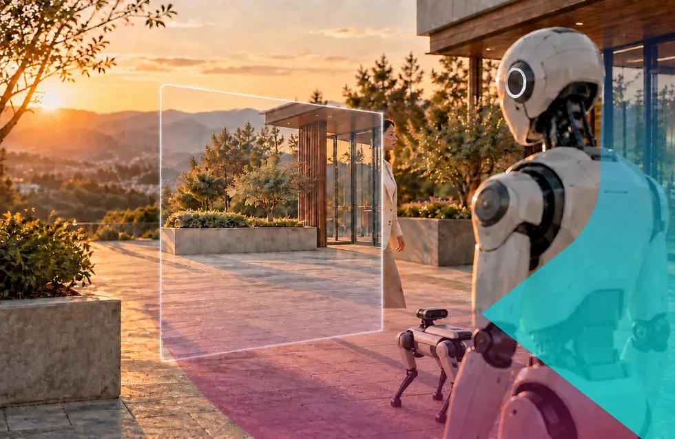

EMBODIED AI WEEKLY / 具身智能周报
具身智能前沿观察
2026年11月01日 · 全球具身智能情报精选

SIGNAL / 本周风向标
本周具身智能行业展现出软硬件一体化迭代与资本理性回归的双重趋势。以智元机器人为代表的厂商正通过大模型、操作系统与生产力评估工具推动机器人的标准化部署与效能量化；同时，自动驾驶重型设备与人形机器人领域的巨额融资，体现了资本市场对高确定性工业落地场景的持续投入与估值修正。
BRIEF 01.01
智元机器人举办2026开放日，发布G2 Max与WITA-Omni 1.0模型
智元机器人（AGIBOT）在2026年开放日上推出了用于衡量机器人生产力的全新工具Worken。
活动期间，智元机器人还发布了AHA3一体化平台、GO-3预览版、WITA-Omni 1.0多模态大模型、G2 Max机器人以及Link-U OS 1.0操作系统架构。
影响解读
智元机器人通过推出生产力评估工具与全栈软硬件产品架构，标志着具身智能行业正从单体硬件展示迈向系统化效能评估与工业级应用阶段。
信息来源：The Robot Report
BRIEF 01.02
波士顿动力Spot展示全身协同操控与复杂环境交互能力

▲ 图片来源：IEEE Spectrum Robotics
IEEE Spectrum发布最新视频，展示了四足机器人Spot在户外运动场地中的全身协同操控（Whole-Body Manipulation）能力。
演示中，Spot能够克服外界干扰进行复杂的物体交互与多肢体配合动作。
影响解读
全身协同操控是具身智能运动控制的核心高地，Spot的表现证明四足及多关节机器人在非结构化环境中的作业能力正持续提升。
信息来源：IEEE Spectrum Robotics
BRIEF 02.01
人形机器人公司Agility预计通过SPAC合并融资4.65亿美元
人形机器人开发商Agility表示，预计在与Churchill Capital Corp XI的合并交易中募集4.65亿美元资金。
这一预期融资额较此前估计的6.2亿美元减少了1.55亿美元。
影响解读
尽管融资金额有所下调，但SPAC交易仍将为Agility的商业化规模扩展提供大额资金支撑，反映出公开资本市场对具身智能估值的合理调整。
信息来源：The Robot Report
BRIEF 02.02
具身安全警示：机器人安全功能面临传感器数据伪造风险

▲ 图片来源：IEEE Spectrum Robotics
网络安全机构VicOne与IEEE Spectrum警示，移动机器人与人形机器人的安全防护机制高度依赖传感器输入的距离与环境信息。
若输入数据受到干扰或伪造，即使机器人原本的安全防范功能正常，也可能发生误判或失效。
影响解读
随着人形机器人和移动机器人进入人类作业空间，传感器的防欺骗与信息安全防御正在上升为具身智能系统安全合规的硬性指标。
信息来源：IEEE Spectrum Robotics
BRIEF 03.01
Bedrock Robotics获6亿美元融资，加速重型设备自动化落地
自动驾驶重型设备开发商Bedrock Robotics完成6亿美元新融资，使其累计融资金额逼近10亿美元。
公司计划利用资金扩大重型自动作业设备的规模，以应对建筑工程领域的劳动力短缺问题。
影响解读
工程建筑领域具备明确的刚需缺口与极高商业价值，重型自动作业设备的巨额融资证明了专用场景具身智能落地的强大变现潜力。
信息来源：The Robot Report
EDITOR'S PERSPECTIVE
软硬协同与生产力量化是具身智能走向产业化的必经之路。智元机器人推出 Worken 等评估工具，表明业内正致力于建立标准化 ROI 衡量体系，推动机器人从示范性实验走向真实的工业产出率对比。
资本正在向确定性强、壁垒高的落地场景靠拢。重型工程设备的近 10 亿美元融资潮与人形机器人公司寻找公开市场的路线并行，反映出投资者既看重垂直赛道的快速变现能力，也在对人形机器人的估值框架进行理性修正。
安全防护必须贯穿具身智能研发的全生命周期。控制系统与大模型融合后，来自传感器和网络层面的数据伪造可能造成物理安全隐患，构建传感器安全与系统防篡改机制将成为商业化部署的前提条件。
EMBODIED AI WEEKLY · 持续观察具身智能最前沿